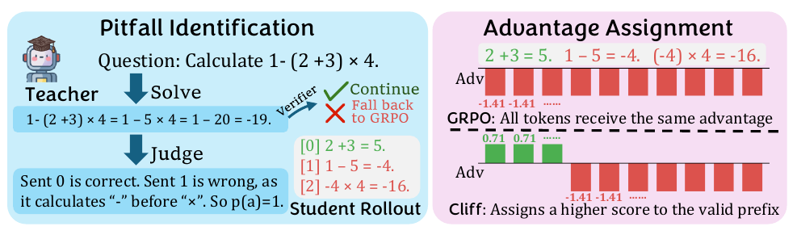
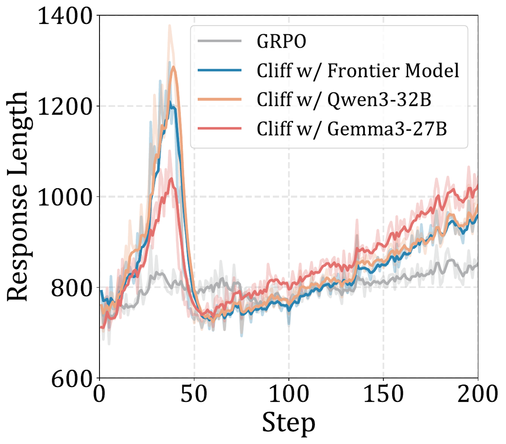
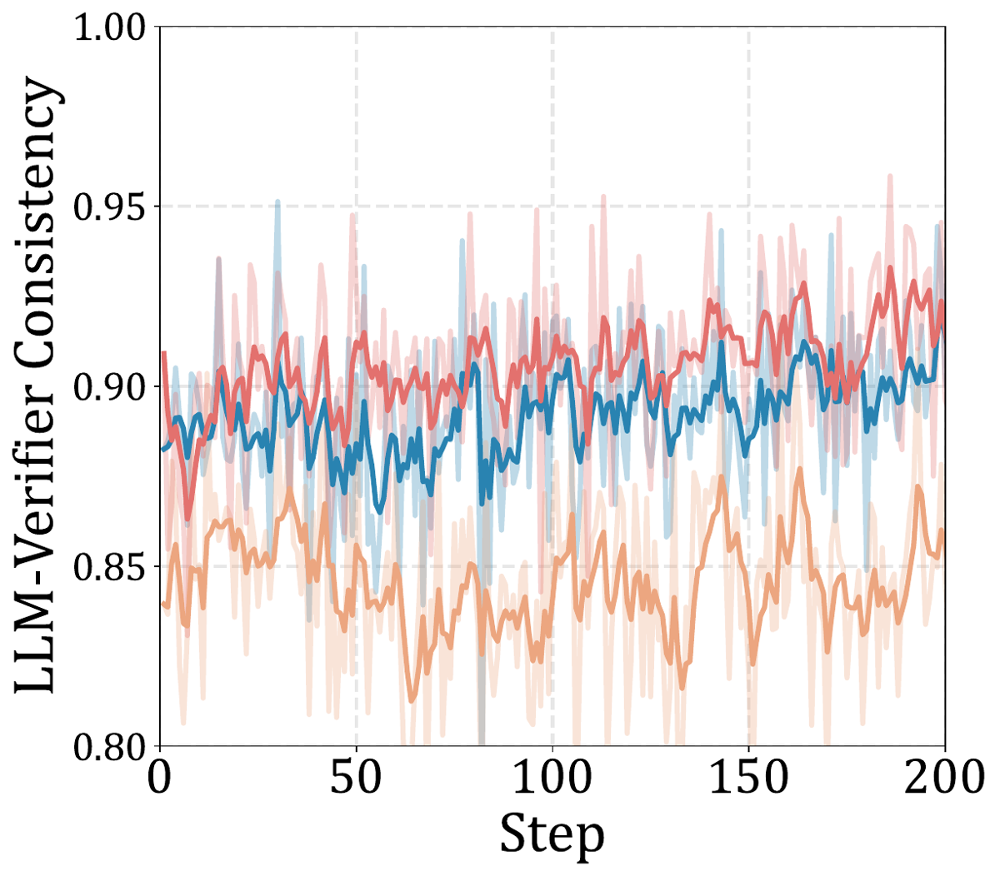
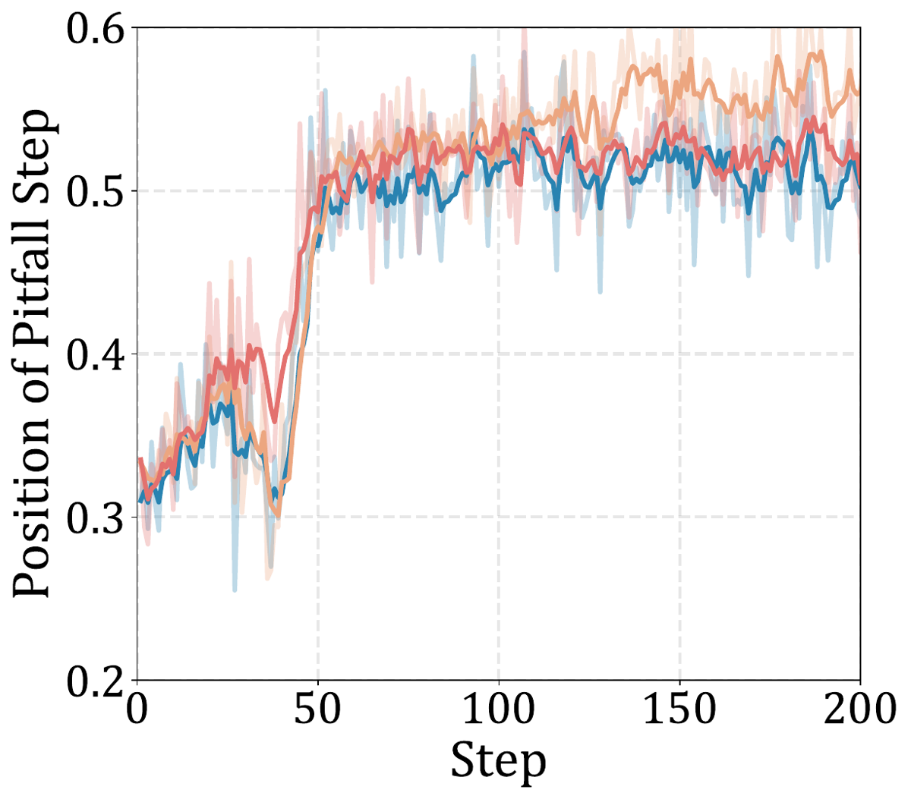

Cliff = reward shaping GRPO où un teacher LLM off-the-shelf localise la première erreur (« Pitfall Step ») de chaque rollout échoué, ce qui coupe le rollout en préfixe valide / suffixe fautif, et où le préfixe reçoit λ·A_cor − b au lieu de A_inc (avec λ=0 par défaut, donc −b) [§3.2.2, Eq. 3].
Claim principal, formulé précisément : sur 12 réglages (2 students × 3 teachers × 2 domaines), un teacher qui n'a besoin de localiser que la première erreur — et non d'évaluer chaque étape — suffit à battre vanilla GRPO de ~7 % relatif et l'on-policy distillation de ~15 % relatif, y compris avec des teachers open-weights de 27-32B dont la précision de résolution est de 65-67 % [abstract, §5.2, Tab. 1-2].
⚠️ Deux réserves structurelles, détaillées plus bas : (i) le « 7 % » est calculé contre vanilla GRPO, pas contre le baseline apparié en appels de teacher (« GRPO with Teacher »), contre lequel le gain tombe à 3,4-4,5 % relatif ; (ii) le papier n'a aucun contrôle de permutation du crédit, donc le gain n'est pas attribué au placement du Pitfall Step.
Origine — aucune tâche n'est fabriquée. Deux pools publics consommés tels quels [§5.1, App. A] :
- math : train DAPO-math-17k-processed (13 116 items), éval GSM8k / MATH-500 / DAPO-math / AIME ;
- coding : train « Deepcoder » (13 485 items, cité sans référence bibliographique), éval CodeContests / LiveCodeBench / DeepCoder.
- SFT avant RL : OpenThoughts, 113 957 items, 2 epochs, uniquement pour Qwen3-4B-Base (« to provide instruction-following ability ») [§5.1, App. B]. Phi-4-mini-Instruct part directement en RL.
Volume, difficulté, filtrage — pas de courbe de difficulté, pas de filtrage pass@k, pas de curriculum. Deux filtrages seulement, tous deux côté teacher : 1. filtre ground-truth : le teacher produit d'abord sa propre reference solution, passée au vérifieur automatique ; si elle échoue, le groupe retombe en vanilla GRPO [§3.2.1] ; 2. skip des groupes unanimes : les groupes dont tous les rollouts sont corrects ou tous incorrects ne sont pas jugés du tout (advantage nul sous GRPO) [App. B]. ⚠️ Économie réelle, mais elle signifie que Cliff n'agit que sur les groupes à variance de reward non nulle — exactement le régime où le droit en cold-start n'est pas (groupes tous-échec).
Contamination / séparation train-test — non traitée. GSM8k est à la fois train (7 473) et éval (1 319) [Tab. 5] : les auteurs ne disent pas si les splits sont disjoints. DAPO-math est train (13 116) et éval (1 000), même remarque. ⚠️ Les deux benchmarks où Cliff gagne le plus (DAPO +6,4 pts, AIME +3,5 pts sur Qwen3-4B/SOTA) sont l'un in-distribution, l'autre hors distribution — l'écart n'est jamais analysé sous cet angle.
Coût humain — un seul jeu annoté : 100 rollouts DAPO-Math (50 corrects, 50 incorrects), les 50 incorrects annotés en « premier pas de raisonnement menant à la conclusion fausse », avec les mêmes instructions que le juge LLM [§4.1]. Qui annote : « human experts », non précisé (ni nombre, ni qualification, ni heures, ni rémunération). Aucun accord inter-annotateurs → pas de plafond de bruit (point développé en 7.0 et en (a)).
Pas d'environnement au sens agentique : single-turn, horizon 1, aucune trajectoire multi-tours, aucun outil.
p-dis est défini sur des « sentence indices », §4.2), converti en position de token pour l'advantage [Eq. 3, note de bas de page sur l'indexation à 0]. La segmentation en phrases elle-même n'est pas décrite : non précisé (pas de règle de découpage, pas de gestion des formules LaTeX ou des blocs de code à cheval sur plusieurs phrases).p(a)=0, c'est-à-dire que toute la séquence est traitée comme fautive, explicitement « pour l'efficacité et pour éviter le length hacking » [§3.2.1, note].sandbox-fusion pour le coding, 10 cas de test par question, timeout 5 s, reward 1 seulement si tous les tests passent (conjonction stricte) [App. A]. Éval en greedy decoding. Note d'App. B : vLLM se comporte différemment selon le GPU pour Phi-4-mini, d'où une séparation H100 (Phi) / B200 (Qwen) — c'est le seul aveu de non-déterminisme d'infra du papier.\boxed{}. Coding : extraction du bloc de code. Que se passe-t-il si rien n'est extractible : non précisé (vraisemblablement reward 0, donc confondu avec une réponse fausse).Deux signaux distincts, à ne pas confondre.
R)Vérifieur automatique, binaire. Math : égalité de la réponse parsée à la ground truth. Coding : conjonction des 10 tests [App. A]. Binaire assumé et défendu en note de bas de page (« binary rewards could be more stable and less noisy »), avec seuillage pour les domaines non binaires [§3.2.2, note].
Pipeline en deux étapes [§3.2.1] : 1. le teacher génère sa propre reference solution → vérifiée par le vérifieur automatique ; si incorrecte, le groupe retombe en vanilla GRPO ; 2. le teacher juge chaque rollout student en voyant sa propre solution vérifiée : d'abord correct/incorrect, puis, si incorrect, l'indice de la première erreur.
Le prompt est « carefully curated » pour que le teacher cible de vraies erreurs de raisonnement et non des coquilles ou des stratégies alternatives valides [§3.2.1] ; prompts recopiés en App. D (voir §3.4 ci-dessous).
Règle d'agrégation de l'advantage [Eq. 3, §3.2.2] — avec μ = taux de succès du groupe, σ = √(μ(1−μ)), A_cor = (1−μ)/σ, A_inc = −μ/σ :
| Cas | Advantage du token |
|---|---|
| rollout correct | A_cor − b |
rollout incorrect, token j < p(a) (préfixe valide) |
λ·A_cor − b |
rollout incorrect, token j ≥ p(a) (suffixe fautif) |
A_inc − b |
b = moyenne des advantages token-level avant recentrage [Eq. 4], de sorte que la moyenne token-level sur le groupe entier soit nulle. λ = 0 en production [§6.2, App. B].
[Tab. 1], 100 rollouts DAPO-Math annotés, 50 corrects / 50 incorrects. p-dis = |indice de phrase humain − indice LLM|.
| Teacher | Reference solution | Ref. Acc. | Judge Acc. | #FP | #FN | Avg. p-dis | p-dis ≤ 1 |
|---|---|---|---|---|---|---|---|
| Qwen3-32B | générée par le teacher | 65 | 88 | 1 | 11 | 3,00 | 68 |
| Gemma3-27B | générée par le teacher | 67 | 86 | 0 | 14 | 4,52 | 39 |
| « SOTA » | générée par le teacher | 93 | 91 | 0 | 9 | 1,23 | 82 |
| Qwen3-32B | ground truth | 100 | 91 | 0 | 9 | 3,30 | 57 |
| Gemma3-27B | ground truth | 100 | 93 | 0 | 7 | 3,77 | 52 |
| « SOTA » | ground truth | 100 | 92 | 0 | 8 | 1,21 | 80 |
| Qwen3-32B | solution incorrecte (sonde) | 0 | 60 | 4 | 36 | 4,70 | 42 |
| Gemma3-27B | solution incorrecte (sonde) | 0 | 51 | 5 | 44 | 5,56 | 44 |
| « SOTA » | solution incorrecte (sonde) | 0 | 81 | 4 | 15 | 2,05 | 73 |
Lecture : FP et FN séparés, avec des dénominateurs implicitement de 50 chacun — c'est conforme à la liste de contrôles, et rare. Les auteurs affirment que « most discrepancies come from false negatives » et notent qu'une partie des FN peut refléter un vérifieur automatique trop permissif (bonne réponse par raisonnement fautif) [§4.2] — argument plausible et illustré par App. E.2.
⚠️ Mais : (i) aucun plafond de bruit — pas d'accord humain↔humain, donc on ne sait pas si p-dis = 1,2 phrase est excellent ou simplement la granularité de la tâche ; les auteurs reconnaissent eux-mêmes « the inherent ambiguity in localizing the first mistake » [§4.4] sans la quantifier ; (ii) p-dis n'est mesuré que sur 50 rollouts, un seul domaine (math), un seul student, et jamais pendant l'entraînement ; (iii) la métrique est une distance en phrases, pas une mesure de l'effet sur l'advantage : une erreur de 3 phrases sur un rollout de 10 phrases déplace une fraction majeure de la masse de tokens, le papier ne convertit jamais p-dis en masse d'advantage mal signée.
Partiellement, et c'est inhabituellement sérieux pour ce type de papier : - sonde de corruption : on donne au teacher une solution de référence volontairement fausse [Tab. 1, bloc du bas]. Résultat : Judge Acc. s'effondre à 60 / 51 / 81 et les FN explosent (36, 44, 15 sur 50). Conclusion utile : la qualité du juge est portée par la reference solution, pas par le juge — pour les teachers open-weights, un référentiel corrompu détruit le signal. - argument théorique anti-hacking [§1, App. C.4] : les auteurs affirment que repousser l'erreur plus loin est toujours préférable et qu'un rollout entièrement correct reste optimal par construction, donc Cliff serait « naturally resistant to reward hacking ». - monitoring en training : la consistance teacher↔vérifieur (85-90 %) et la position relative du Pitfall Step sont suivies au long du training [Fig. 2] ; la stabilisation du ratio à ~0,5 est interprétée comme l'absence de hacking du teacher [§6.3]. - ⚠️ Ce qui manque : aucune politique n'est entraînée contre le juge (pas de red-teaming de la localisation), aucun test sur des rollouts dégénérés ou mutés, et le juge ne voit que le livrable textuel (pas de trajectoire d'outils — il n'y en a pas).
⚠️ Biais du prompt, mesurable et important pour le droit : le prompt impose trois fois le bénéfice du doute (« When unsure, treat the step as correct », « NEVER flag … a step that is merely unnecessary, verbose, or informal », « a failed attempt corrected later ») et surtout une DECISION RULE ancrée sur l'outcome : « if the student's FINAL ANSWER matches the reference's, the solution is almost always correct ». Conséquences : (i) les 0-1 FP de Tab. 1 sont en partie fabriqués par le prompt, pas découverts ; (ii) le juge est volontairement poussé à localiser le Pitfall Step tard ; (iii) le prompt interdit explicitement de flagger ce qui est « merely unnecessary » — or en droit, l'analogue de « insuffisant mais pas faux » est précisément une omission, et le prompt ordonne de ne pas la signaler. Le cas d'échec App. E.3 est exactement cela (voir §7 et §9).
GRPO avec loss token-level de DAPO [§3.1, note], advantage remplacé par Eq. 3. Pas de critic appris, pas de PRM, pas de reward model entraîné — c'est le point de vente.
| Paramètre | Valeur | Source |
|---|---|---|
| Actor LR | 1e-6 | Tab. 6c |
| Batch size | 64 | Tab. 6c |
Rollouts par prompt (N) |
12 | Tab. 6c |
| Training steps | 200 | Tab. 6c |
| Max response length (train) | 4096 | Tab. 6c |
| Max response length (inference) | 8192, greedy decoding | App. B |
| Rollout temperature | 1,0 (student) ; 0,6 (teacher) | Tab. 6c, App. B |
KL penalty β |
0 (pas de KL du tout) | Tab. 6c |
Clip ε |
0,2 | Tab. 6c |
λ (Cliff) |
0 | §6.2, App. B |
| Normalisation de l'advantage | GRPO standard (R−μ)/σ, puis recentrage token-level par b sur le groupe entier |
Eq. 2, Eq. 4 |
| Overlength | p(a)=0 (tout le rollout fautif) — présenté comme garde nécessaire, pas comme une économie |
§3.2.1, App. C.3 |
| Skip des groupes unanimes | oui (ni jugement ni reference solution) | App. B |
| Framework | veRL | App. B |
| Compute | 4 × H100 80 GB (Phi-4-mini) ou B200 192 GB (Qwen3-4B) | App. B |
| Seeds / IC | aucun — pas un seul écart-type, pas une barre d'erreur dans tout le papier (vérifié par grep sur seed, \pm, std) |
— |
| Appariement de budget | « we follow standard practices in veRL and ensure different settings have comparable data budgets » — affirmation sans chiffre ; les steps diffèrent d'ailleurs fortement (Distill 400, OPD 1000, GRPO/Cliff 200) | App. B |
Stabilité : ce qui a cassé et comment ils l'ont réparé — deux incidents documentés, tous deux de length hacking, et c'est la partie la plus instructive du papier :
1. λ trop grand → allongement : à λ=1,0, la longueur moyenne passe de 1 506 à 1 959 tokens et l'accuracy chute de 65,66 à 63,98 [Tab. 4]. Correction : λ=0. Justification théorique : la masse d'allongement de Cliff vaut Φ = 2Nb et la condition d'allongement devient ρ > 1 − s̄(1 + λ(1−μ)/μ), strictement plus facile à satisfaire que celle de GRPO (ρ > 1) ⇒ Cliff est structurellement plus permissif que GRPO sur l'allongement, pour tout s̄ > 0 [App. C.3]. Avec b ≈ 0,05 empirique, la condition anti-hacking (C2) λ ≤ b/A_cor impose λ quasi nul [App. C.4].
2. Rollouts tronqués : sans le cap p(a)=0, le teacher accorde un long préfixe valide à un raisonnement « pas faux, juste pas fini », ce qui récompense la troncature. Les auteurs écrivent que ce cap « is not merely a saving of judge calls but a necessary guard » [App. C.3]. ⚠️ Aucune ablation sans le cap n'est montrée — l'affirmation de nécessité est théorique.
Dynamique [Fig. 2, Phi-4-mini, math] : pic de longueur vers le step 30-40 (jusqu'à ~1 290 tokens contre ~820 pour GRPO) puis retour à ~750 au step 50 et remontée régulière jusqu'à ~1 000 au step 200, toujours au-dessus de GRPO (~850) ; consistance teacher↔vérifieur 83-92 % stable sur 200 steps ; ratio de position du Pitfall Step qui monte de ~0,31 à ~0,50 en 50 steps puis se stabilise.
| Cas | Comportement | Détection | Correction | Évaluée ? |
|---|---|---|---|---|
Length hacking par λ |
le modèle rallonge le préfixe correct avant la première erreur | sweep λ + analyse de la length mass Φ |
λ=0 |
oui [Tab. 4 : 3 valeurs de λ, longueur et accuracy] |
| Hacking par troncature | rollout tronqué = préfixe entièrement « valide » pour le teacher | raisonnement analytique [App. C.3] | hard cap p(a)=0 |
non (pas de run sans le cap) |
| Reference solution corrompue | le juge hérite de l'erreur du référentiel | sonde avec solution fausse injectée [Tab. 1, bloc bas] | filtre ground-truth sur la reference solution | oui — et le coût de l'absence de filtre est chiffré [Tab. 3 : −1,93 à −2,60 pts pour les teachers open-weights, −0,27 à −0,76 pour le frontier] |
| Hacking du juge par la politique | — | monitoring du ratio de position du Pitfall Step [Fig. 2] | — | non : la stabilisation du ratio à 0,5 est interprétée comme absence de hacking, ce n'est pas un test |
⚠️ Failure modes non traités : (i) aucune attaque adverse du localisateur (pas de politique entraînée à repousser artificiellement la première erreur par du remplissage sémantiquement plausible — or App. C.4 reconnaît que seul le verdict du juge sépare le remplissage du vrai raisonnement) ; (ii) aucune ventilation par sous-population (difficulté, longueur, domaine) ; (iii) aucune mesure de l'abstention ou du refus ; (iv) aucun examen de ce qui arrive aux rollouts corrects, alors que Cliff leur retire mécaniquement b d'advantage par rapport à GRPO (voir §7).
Très peu documenté. Ce qu'on sait : 4 GPU (H100 ou B200), veRL, 200 steps, batch 64 × 12 rollouts = 768 rollouts par step [Tab. 6c]. Le surcoût de Cliff = 1 appel de génération de reference solution par prompt + 1 appel de jugement par rollout non skippé, soit jusqu'à 13 appels de teacher par prompt, moins les groupes unanimes. Aucun chiffre : ni nombre d'appels effectifs, ni tokens consommés, ni temps mural, ni coût, ni sync/async, ni débit. Non précisé pour tout le reste. ⚠️ C'est un trou sérieux pour un papier dont la thèse est « un teacher modeste suffit » : on ne peut pas comparer le coût de Cliff à celui d'un PRM entraîné une fois pour toutes, ce qui est pourtant l'alternative qu'il prétend remplacer.
| Chiffre annoncé | Où | Source dans le papier | Verdict |
|---|---|---|---|
| « Experiments across 12 different scenarios » | abstract | 2 students × 3 teachers × 2 domaines = 12 [Tab. 2] | confirmé (décompte reconstituable) |
| « outperforming on-policy distillation by 15 % » | abstract, intro | Recalcul sur Tab. 2 : moyenne des gains relatifs Cliff/OPD = +15,98 % sur les 8 scénarios où OPD existe ; ratio des moyennes = +14,29 % | sur-généralisé : la valeur est bonne, mais OPD n'est appliqué qu'aux teachers open-source (« Only applied for open-source teachers », §5.1), donc sur 8 scénarios sur 12, pas sur les 12 annoncés dans la même phrase |
| « and standard GRPO by 7 % » | abstract, intro, conclusion | Recalcul sur Tab. 2 : vs vanilla GRPO, moyenne des gains relatifs par cellule = +7,42 % (par scénario : +6,25 %) ⇒ le chiffre est celui-là. Mais vs le baseline apparié en appels de teacher (« GRPO with Teacher »), le gain tombe à +4,52 % par cellule et +3,42 % par scénario (en absolu : +1,42 pt) | sur-généralisé : vrai uniquement contre le baseline non apparié ; contre le baseline qui consomme le même teacher, c'est la moitié. La conclusion (§7) le dit d'ailleurs explicitement : « 7 % performance gain over vanilla GRPO » |
| « Cliff consistently improves reasoning performance » | abstract | Tab. 2 : les 12 moyennes de scénario battent bien vanilla GRPO | confirmé — mais seulement avec « vanilla » comme référent |
| « Cliff achieves the best performance under every evaluated setting » | §5.2 | Tab. 2 : contre-exemple — Phi-4-Mini / teacher frontier / coding, moyenne Cliff 24,93 vs GRPO-with-Teacher 24,94. Et au niveau des cellules individuelles, Cliff est ≤ GRPO-with-Teacher dans 9 cellules sur 42 (p. ex. LiveCodeBench Qwen3-4B/frontier : 27,82 vs 28,64 ; DAPO Phi/Qwen : 29,10 vs 29,30 ; GSM8k Phi/Gemma : 89,23 vs 90,42) | contredit : 24,93 vs 24,94, et 9/42 cellules perdantes |
| « even with teachers of modest capability » | abstract | Tab. 1 : Qwen3-32B 65 % et Gemma3-27B 67 % de Ref. Acc. ; Tab. 2 : sur les 8 scénarios à teacher open-weights, Cliff bat le GRPO apparié 8 fois sur 8 (+0,50 à +3,42 pts) | confirmé |
| « the judgment accuracy exceeds 90 % and the average p-dis is only around 3 sentences » | §4.3 | Tab. 1, bloc ground truth : Judge Acc. 91 / 93 / 92 ✓ ; p-dis 3,30 / 3,77 / 1,21 | confirmé pour l'accuracy ; « around 3 » est généreux pour Gemma3-27B (3,77) et faux par excès pour le frontier (1,21) — la moyenne des trois est 2,76 |
| « most discrepancies come from false negatives » | §4.2 | Tab. 1 : FP ∈ {0,1} et FN ∈ {7,14} sur des dénominateurs de 50 | confirmé — mais voir ⚠️ §3.4 : le prompt ordonne le bénéfice du doute, donc la rareté des FP est en partie un artefact du prompt |
| « this design is naturally resistant to reward hacking … postponing a mistake is always preferable » | §1 | App. C.4 : la non-hackabilité par allongement n'est garantie que sous (C1) λ < L_cor/L_max ≈ 0,3 et (C2) λ ≤ b/A_cor avec b ≈ 0,05 ; App. C.3 montre au contraire que Cliff facilite l'allongement par rapport à GRPO pour tout s̄>0 ; Tab. 4 le confirme empiriquement à λ=1 |
sur-généralisé : vrai pour λ≈0 seulement, et les auteurs concluent eux-mêmes que « what separates the two cases is the judge's verdict rather than the shape of the advantage » [App. C.4] |
| « the model has established a more consistent reasoning process instead of hacking the teacher model » | §6.3 | Fig. 2 (droite) : ratio stabilisé à ~0,50 | introuvable comme preuve : une stabilisation de la position moyenne n'exclut pas le hacking (un modèle qui allonge préfixe et suffixe proportionnellement garde un ratio constant). C'est une interprétation, pas un test |
| « we also observe lower consistency for the Gemma teacher » | §6.3 | ⚠️ Incohérence texte/figure : en reportant la légende du panneau de gauche de Fig. 2 (Qwen3-32B = orange clair, Gemma3-27B = rouge), la courbe la plus basse du panneau central (~0,84) est Qwen3-32B, et Gemma3-27B est la plus haute (~0,91). Le texte est cohérent avec Tab. 1 (Gemma = pire p-dis 4,52 et plus de FN) mais pas avec sa propre figure | contredit par la figure, ou légende erronée — l'un des deux est faux |
| Student | Teacher | Domaine | vanilla GRPO | Distill | OPD | GRPO + Teacher | Cliff |
|---|---|---|---|---|---|---|---|
| Qwen3-4B | frontier | math | 61,68 | 58,58 | n.a. | 62,37 | 65,66 |
| Qwen3-4B | Qwen3-32B | math | 61,68 | 58,44 | 58,17 | 61,20 | 64,62 |
| Qwen3-4B | Gemma3-27B | math | 61,68 | 55,91 | 55,24 | 62,02 | 63,70 |
| Qwen3-4B | frontier | code | 24,20 | 20,61 | n.a. | 24,83 | 25,96 |
| Qwen3-4B | Qwen3-32B | code | 24,20 | 22,98 | 20,38 | 25,52 | 26,02 |
| Qwen3-4B | Gemma3-27B | code | 24,20 | 24,41 | 21,31 | 24,84 | 25,58 |
| Phi-4-Mini | frontier | math | 49,78 | 46,65 | n.a. | 49,86 | 51,73 |
| Phi-4-Mini | Qwen3-32B | math | 49,78 | 50,28 | 48,11 | 50,18 | 51,48 |
| Phi-4-Mini | Gemma3-27B | math | 49,78 | 47,82 | 44,40 | 49,88 | 50,90 |
| Phi-4-Mini | frontier | code | 21,72 | 19,99 | n.a. | 24,94 | 24,93 |
| Phi-4-Mini | Qwen3-32B | code | 21,72 | 20,25 | 20,39 | 22,67 | 23,58 |
| Phi-4-Mini | Gemma3-27B | code | 21,72 | 19,97 | 19,97 | 22,01 | 23,25 |
Ordre de grandeur à retenir : +1,42 pt absolu en moyenne contre le baseline apparié, sur des échelles de 20 à 65 pts, sans un seul écart-type. Pour mémoire, le même papier rapporte un écart de 0,01 pt comme une victoire.
Pas d'axe ID/OOD explicite. De facto : GSM8k et DAPO-math sont à la fois train et éval (séparation des splits non précisée), MATH-500 et AIME sont hors distribution d'entraînement. Les gains sont nettement plus grands hors distribution (AIME +3,54 pts, DAPO +5,30 pts sur Qwen3-4B/frontier) que sur GSM8k (+1,13 pt, souvent une perte) — mais GSM8k est saturé (~93 %), donc l'interprétation est ambiguë. Aucun transfert inter-domaines mesuré (pas de modèle entraîné en math et évalué en code, ni l'inverse) : les 12 scénarios sont 12 entraînements séparés.
| Ablation | Résultat | Ce qu'elle isole |
|---|---|---|
| GRPO with Teacher [Tab. 2] | +0,68 pt en moyenne sur vanilla GRPO, contre +2,11 pour Cliff | La meilleure ablation du papier : même teacher, mêmes appels, advantage uniforme sur tout le rollout ⇒ isole le découpage préfixe/suffixe de la simple présence d'un juge. C'est aussi le budget apparié, et le vrai dénominateur du gain (+1,42 pt / +4,5 % relatif) |
Sweep λ [Tab. 4] |
0,0 → 65,66 / 1 506 tok · 0,5 → 64,67 / 1 481 · 1,0 → 63,98 / 1 959 | Isole la magnitude du crédit positif sur le préfixe, pas son placement. Montre que donner un advantage positif au préfixe d'un rollout raté dégrade |
| Filtre ground truth on/off [Tab. 3] | frontier : 65,66 → 64,90 (−0,76) et 51,73 → 51,46 (−0,27) · Qwen3-32B : 64,62 → 62,69 (−1,93) et 51,48 → 49,72 (−1,76) · Gemma3-27B : 63,70 → 62,35 (−1,35) et 50,90 → 48,30 (−2,60) | Isole proprement la dépendance au vérifieur exact. Résultat le plus utile pour le droit : sans ground truth, les teachers open-weights perdent 1,4-2,6 pts et Gemma passe sous vanilla GRPO sur Phi (48,30 vs 49,78) |
| Sonde de reference solution corrompue [Tab. 1] | Judge Acc. 88→60, 86→51, 91→81 ; FN 11→36, 14→44, 9→15 | Isole la part du signal portée par le référentiel plutôt que par le juge. Très informatif |
| Permutation du crédit à densité égale | absente | ⚠️ voir ci-dessous |
| Baseline de crédit dense triviale (uniforme pondérée, décroissante, position aléatoire) | absente, sauf si l'on compte GRPO-with-Teacher comme le cas « uniforme » | ⚠️ voir ci-dessous |
λ fait varier la hauteur du créneau, jamais sa position.p(a), alors que les auteurs reconnaissent une « inherent ambiguity » [§4.4] et que le seul cas d'échec montré présente un écart de 20 phrases [App. E.3].p-dis), et la consistance juge↔vérifieur automatique est suivie en training [Fig. 2] ; la reproductibilité du juge (même rollout, deux appels, température 0,6) n'est jamais mesurée.Aucun. Deux students (4B et ~4B), pas de courbe d'échelle. Trois teachers mais seulement comme catégories (frontier / 32B / 27B), pas comme axe.
| Case | Verdict | Justification en une ligne |
|---|---|---|
baselines |
✅ 1 | GRPO-with-Teacher est un baseline apparié en modèle, en appels de juge et en steps ; Distill et OPD sont à jour (k1 estimator, méthode cross-tokenizer de niu2026breaking) — même si leurs steps diffèrent. |
ablation |
✅ 1 | Trois ablations qui isolent chacune une chose : teacher seul vs découpage (Tab. 2), magnitude du crédit (Tab. 4), filtre ground-truth (Tab. 3), plus la sonde de référentiel corrompu (Tab. 1). |
variance |
❌ 0 | Pas un seed, pas un écart-type, pas un intervalle de confiance ; et des écarts annoncés comme des victoires à 0,01 pt. |
coherence |
❌ 0 | 7.0 relève un chiffre contredit (« best under every setting » : 24,93 vs 24,94, 9/42 cellules), deux chiffres sur-généralisés majeurs (le « 7 % » contre un baseline non apparié ; le « 15 % » sur 8 scénarios présentés comme 12) et une incohérence texte/figure sur la consistance de Gemma. |
eval |
✅ 1 | Juge validé contre annotation humaine avec FP/FN séparés, et sondé par corruption du référentiel — ce qui est plus que la quasi-totalité du corpus. ⚠️ Accordée malgré la séparation train/test non précisée sur GSM8k et DAPO-math, et le plafond de bruit manquant : c'est la case la plus discutable des six. |
repro |
❌ 0 | Aucun code, aucune donnée, aucun prompt exécutable publiés ; le teacher principal n'est même pas nommé (« a state-of-the-art LLM » / « Frontier Model ») ; la seule URL du papier est l'image Docker du sandbox VolcEngine (https://hub.docker.com/r/volcengine/sandbox-fusion, testée : HTTP 200). |
evidence : 3/6 — manquant : variance, coherence, repro.
Plausible mais fragile. La mécanique est propre, l'intuition (« une seule frontière suffit ») est élégante et bien testée du côté du juge — l'étude de qualité du juge avec FP/FN séparés et la sonde de référentiel corrompu sont au-dessus de la moyenne du corpus. Mais l'effet, une fois ramené au baseline apparié, est de +1,42 pt absolu / +4,5 % relatif, sans un seul écart-type, avec un contre-exemple à 0,01 pt et aucun contrôle de permutation. Dans cet état, on ne peut pas distinguer « le crédit est placé au bon endroit » de « l'advantage intra-trajectoire est devenu hétérogène et le créneau positif a été retiré aux rollouts corrects » (effet de b). À répliquer avec seeds et permutation avant de s'en servir comme argument de conception.

Ce qu'il faut voir : le pipeline en deux temps — le teacher résout d'abord (sa solution passe le vérifieur, sinon fall back GRPO), puis juge le rollout student phrase par phrase et sort p(a)=1. ⚠️ Et une incohérence de la figure avec la méthode effectivement utilisée : le panneau de droite montre le préfixe valide recevant un advantage positif +0,71 (barres vertes) et le suffixe −1,41 — ce sont exactement A_cor et A_inc pour un groupe à μ=2/3, donc la figure illustre λ=1 et b=0. Or la configuration de tous les résultats est λ=0 avec b≈0,05 retranché partout [§6.2, App. B, App. C.4] : en pratique le préfixe reçoit −b ≈ −0,05, c'est-à-dire un advantage négatif mais moins négatif que le suffixe, et les rollouts corrects reçoivent A_cor − b, donc moins que sous GRPO. Un lecteur de la figure conclurait l'inverse de ce que fait le code. Ce point est central pour la question d'ancrage (§9 et plus bas).

Ce qu'il faut voir : (gauche, légende valable pour les trois panneaux) GRPO en gris reste à ~800-850 tokens, les trois variantes Cliff font un pic transitoire à ~1 050-1 290 tokens vers le step 35, retombent à ~750 au step 50, puis remontent régulièrement au-dessus de GRPO jusqu'à ~950-1 030 au step 200. C'est la signature empirique de Φ = 2Nb > 0 démontrée en App. C.3 : Cliff allonge structurellement plus que GRPO, même à λ=0. Le pic précoce n'est jamais expliqué par les auteurs.

Ce qu'il faut voir : la consistance est plate sur 200 steps entre 0,83 et 0,92 — autrement dit 8 à 17 % des rollouts sont classés différemment par le teacher et par le vérifieur, en permanence, sans tendance. C'est le plancher de bruit du signal de process, et il est grand devant le gain mesuré (+1,42 pt). ⚠️ En reportant la légende du panneau de gauche, la courbe la plus basse est Qwen3-32B (orange clair, ~0,84) et la plus haute Gemma3-27B (rouge, ~0,91), alors que le texte de §6.3 affirme « lower consistency for the Gemma teacher » : texte et figure se contredisent.

Ce qu'il faut voir : la fraction de tokens dans le préfixe valide monte de ~0,31 à ~0,50 en 50 steps, puis se stabilise entre 0,50 et 0,56. Les auteurs lisent cela comme « le modèle apprend à aller plus loin avant d'échouer, sans hacker le teacher » [§6.3]. ⚠️ Lecture alternative non exclue : un modèle qui allonge préfixe et suffixe dans la même proportion garde ce ratio constant ; la courbe ne distingue pas les deux. Et le fait que la moitié de la masse de tokens d'un rollout raté soit, par construction, placée du côté « valide » est l'information la plus importante du panneau — c'est l'équivalent de la question des tours posthumes.
| Ingrédient | Choix du papier | Équivalent juridique | Transfert | Ce qui manque |
|---|---|---|---|---|
| Source des tâches | 2 pools publics consommés tels quels (DAPO-math 13k, Deepcoder 13k), aucun filtrage, aucun curriculum [§5.1, App. A] | Dossiers Harvey LAB / Vals LRB, mémos de recherche, QJ | non | Le papier ne fabrique aucune tâche et n'a aucune leçon de data engineering à offrir |
| Vérifieur de reward | binaire, exact, conjonctif (réponse parsée == GT ; 10/10 tests) [App. A] | ❌ aucun équivalent exact pour un mémo juridique | non | C'est le présupposé non transférable. ⚠️ Mais c'est le seul papier du corpus à chiffrer le coût de son absence : Tab. 3 montre −1,4 à −2,6 pts quand on retire le filtre ground-truth pour un teacher open-weights, et Gemma passe sous vanilla GRPO. C'est l'estimation la plus directe de ce que coûte un domaine sans vérifieur exact |
| Localisateur de crédit | teacher LLM gelé, off-the-shelf, prompt unique, voit question + sa propre solution vérifiée + le rollout découpé en phrases numérotées [§3.2.1, App. D] | Gemini gelé désignant la phrase où un raisonnement juridique dévie, avec un mémo de référence validé | adaptable | Le pivot est la reference solution vérifiée : en droit, elle n'existe pas sous forme vérifiable. Sans elle, Tab. 1 (bloc bas) montre Judge Acc. 51-81 % et FN jusqu'à 44/50 |
| Granularité du crédit | une seule frontière par rollout raté, pas de score par étape [§3.2] | Une seule « marche » : jusqu'où le raisonnement tient avant de dérailler | direct — c'est l'idée à prendre | Rien ne prouve que le gain vienne du placement de cette frontière (permutation absente) |
| Ancrage du crédit | ❌ pas d'ancrage par trajectoire : seul Σ_i Σ_j A_ij = 0 sur le groupe [App. C.3]. Le total par trajectoire varie avec p(a) |
Un juge de process qui ne peut jamais relever le score global d'un livrable raté | non, en l'état | Voir le point (b) ci-dessous : la préservation du signe repose sur λ=0 + b>0 empirique, pas sur une identité |
| Harness / outils | single-turn, pas d'outils, sandbox d'exécution pour le code uniquement [App. A] | Recherche jurisprudentielle, citation checker, lecture de pièces | non | Zéro matière : aucune trajectoire multi-tours, aucun appel d'outil. Les auteurs annoncent l'agentique comme travail futur [§7] |
| Algo | GRPO token-level DAPO, β=0, advantage remplacé par un créneau à deux niveaux, recentré par b [Eq. 3-4] |
idem | direct | ~20 lignes dans veRL ; mais b retire mécaniquement de l'advantage aux rollouts corrects, effet jamais isolé |
| Curriculum | aucun ; seulement le skip des groupes unanimes [App. B] | — | non | ⚠️ Le skip est un anti-curriculum pour le droit : il supprime exactement les groupes tous-échec, c'est-à-dire le régime de cold-start d'un agent juridique |
| Anti-hacking | λ=0 (preuve de non-allongement), cap p(a)=0 sur les rollouts tronqués, monitoring du ratio de position [§6.2, App. C] |
Interdire au juge d'accorder un crédit positif à un livrable raté ; traiter un mémo tronqué comme intégralement fautif | adaptable | Aucune attaque par une politique apprenante ; et App. C.4 concède que seul le verdict du juge sépare le remplissage du vrai raisonnement |
p-dis ≈ 1,2-3,8 phrases sur des rollouts math de ~25 phrases devient, sur un mémo de 200 phrases, une incertitude dont le papier ne dit rien.first_mistake_id = un indice de phrase existante, ou null) ne peut pas la représenter.
2. Le seul cas d'échec montré par les auteurs [App. E.3] est exactement une omission : le student écrit « 20 est une période », ce qui est vrai mais insuffisant (il fallait trouver que 4 est la période). Le teacher pointe la phrase [5] ; l'annotateur humain pointe [25], où la faute réelle se produit. Écart = 20 phrases sur un rollout de 27, soit ~74 % de la masse de tokens basculée du côté « fautif ».
3. Conséquence mécanique : face à une omission, le juge fait l'un de deux choix, tous deux mauvais — soit il déclare le rollout correct (le bénéfice du doute du prompt), et l'omission ne reçoit aucun signal ; soit il attribue l'omission à la dernière phrase présente qui aurait dû la contenir, et il pénalise en bloc tout un raisonnement correct. Il n'y a pas de troisième branche dans le format.
4. ⚠️ Et c'est le cas majoritaire en droit : un mémo qui oublie une juridiction, une exception, une prescription, n'a aucune phrase fausse.Le filtre « reference solution vérifiée », pas le Pitfall Step. C'est-à-dire : n'utiliser le jugement de process d'un juge que sur les items où le juge a d'abord produit, indépendamment, une réponse de référence jugée acceptable ; sinon retomber sur le reward d'outcome seul. [§3.2.1] C'est un gate bon marché, mesuré deux fois dans le papier (Tab. 1 pour la précision du juge, Tab. 3 pour l'effet en training), et il se transpose directement : en droit, « reference solution vérifiée » devient « le juge a produit un mémo qui passe une checklist dure (citations existantes et non abrogées, juridiction correcte, dispositif présent) », et l'échec du gate ⇒ reward d'outcome seul. Second ingrédient : le cap sur les livrables tronqués (p(a)=0), qui est une garde réelle et gratuite.
Montage. Sur un env juridique à outcome binaire approximé (p. ex. QJ Vals LRB dont la réponse est scorable, ou une tâche de rédaction avec checklist dure de 10 items, conjonctive), entraîner Gemini en GRPO, N=12, 200 steps, puis comparer quatre bras à budget de juge strictement apparié :
1. GRPO-with-Judge (le juge classe correct/incorrect, advantage uniforme) — le baseline apparié ;
2. Cliff (frontière au premier dérapage identifié par le juge, λ=0) ;
3. Cliff-permuté : mêmes magnitudes, même densité, frontière tirée uniformément au hasard dans le rollout, indépendamment du jugement ;
4. Cliff-ancré : la frontière du juge, mais advantage renormalisé pour que Σ_j A_{ij} par trajectoire soit fixé à (R_i − μ)/σ (contrainte d'ancrage à la 2610.15840).
Trois seeds par bras, écarts-types rapportés. En parallèle, 150 trajectoires annotées par des juristes, avec double annotation pour obtenir le plafond de bruit, et p-dis ventilé par tercile de position dans la trajectoire.
Résultat attendu si Cliff fonctionne pour la raison annoncée. Bras 2 > bras 3 d'un écart supérieur à l'écart-type inter-seeds ; bras 4 ≈ bras 2 ou meilleur ; accord juge↔juriste à peu près homogène sur les trois terciles.
Falsifiant (et c'est l'issue que je pronostique). Bras 3 ≈ bras 2 à l'écart-type près ⇒ le gain vient de l'hétérogénéité de l'advantage et du retrait de b aux rollouts corrects, pas du placement : Cliff devient une technique de réduction de variance déguisée en process reward, et n'a aucune raison d'être appliquée au droit. Second falsifiant, indépendant : accord juge↔juriste qui s'effondre sur le premier tercile (le motif que la 2610.15840 rapporte, 44 % vs 88 %), c'est-à-dire exactement là où se décident la juridiction, la théorie du cas et le périmètre de recherche — auquel cas la frontière est fiable là où elle ne sert à rien et fausse là où elle compte.
« Pour notre env juridique, notre signal de process est-il ancré — c'est-à-dire : la somme des advantages d'une trajectoire est-elle fixée par le reward réel, de sorte qu'aucun verdict de juge ne puisse retourner le signe d'un livrable raté — ou le juge peut-il injecter du reward ? Et si nous choisissons de ne pas l'ancrer, quel contrôle de permutation nous engageons-nous à lancer avant d'y croire ? » Corollaire opérationnel : exiger qu'aucun jeu d'annotation de process ne soit commandé à des juristes sans double annotation sur au moins un sous-échantillon, le plafond de bruit étant la première chose que ce papier ne mesure pas.
Un juge LLM gelé, jamais un oracle ni un rollout Monte-Carlo. Le Pitfall Step est produit par un teacher off-the-shelf (frontier non nommé, Qwen3-32B, ou Gemma3-27B) en un appel, à température 0,6, qui voit la question, sa propre solution de référence préalablement validée par le vérifieur automatique, et le rollout student découpé en phrases numérotées ; il renvoie un JSON avec first_mistake_id [§3.2.1, App. D]. Aucun rollback, aucun re-rollout depuis un préfixe, aucune estimation de valeur : la localisation n'est jamais confrontée à une vérité terrain causale du type « si je repars d'ici, le taux de succès chute ».
Précision, mesurée contre quoi. Contre 50 rollouts incorrects annotés par des « human experts » sur DAPO-Math [§4.1, Tab. 1], avec deux métriques : Judge Acc. (correct/incorrect, sur les 100) et p-dis = distance en indices de phrase (sur les 50 incorrects). Dans le réglage qui correspond à l'entraînement réel (reference solution vérifiée) : Judge Acc. 91-93 %, p-dis moyen 1,21 (frontier) / 3,30 (Qwen3-32B) / 3,77 (Gemma3-27B), et p-dis ≤ 1 dans 80 / 57 / 52 % des cas.
FP et FN séparés : oui. #FP ∈ {0,1} et #FN ∈ {7,9,11,14} sur 50 chacun [Tab. 1] — un des rares papiers du corpus à le faire. ⚠️ Deux réserves : (i) la rareté des FP est partiellement fabriquée par le prompt, qui impose trois fois le bénéfice du doute et ancre la décision sur la concordance de la réponse finale [App. D] ; (ii) les auteurs notent eux-mêmes qu'une partie des FN sont des vrais positifs du point de vue du raisonnement, que le vérifieur automatique accepte à tort [§4.2, App. E.2].
Plafond de bruit : non, et c'est le trou principal. Aucun accord inter-annotateurs humains, alors que les auteurs reconnaissent explicitement « the inherent ambiguity in localizing the first mistake » [§4.4]. On ne peut donc pas dire si p-dis = 1,2 est près de l'optimum atteignable ou simplement la granularité de la tâche. L'unique point de calibration disponible est le cas d'échec montré par les auteurs [App. E.3] : écart de 20 phrases entre teacher et humain sur un rollout de 27, sur un cas où le pas pointé était vrai mais insuffisant. Le plancher de bruit in-training, lui, est visible sur Fig. 2 (centre) : 8 à 17 % de désaccord permanent entre teacher et vérifieur sur la simple binaire correct/incorrect.
La contradiction avec 2609.19113 tient-elle ? Elle ne s'applique pas directement : Cliff n'est pas multi-tours et n'a pas de notion de tour posthume. Mais la structure du problème est la même, et Cliff la rend quantitative — le ratio de position du Pitfall Step se stabilise à ~0,50 [Fig. 2, droite], c'est-à-dire qu'en régime, la moitié de la masse de tokens d'un rollout raté est déclarée « valide » et l'autre moitié « fautive ». C'est exactement l'analogue de « 65 % des tours sont posthumes » : un reward d'outcome traite ces ~50 % de tokens valides comme fautifs. La différence décisive est l'autorité : 2609.19113 lit cette frontière dans la vérité par tour d'un jeu fermé, Cliff la fait déclarer par un modèle dont on ignore le plafond de bruit. Donc l'observation de 2609.19113 est confirmée dans son esprit, mais Cliff ne peut pas servir de preuve indépendante — il mesure la frontière avec l'instrument dont il voudrait valider la précision.
Non, pas au sens de 2610.15840. Cliff ne contraint pas Σ_j A_{ij} par trajectoire. La seule contrainte est le recentrage de l'offset b, qui annule la moyenne token-level sur le groupe entier : « Since Cliff recenters token-level advantage to zero, we have Σ_i Σ_j A_{ij} = 0 » [App. C.3]. C'est un ancrage de groupe, pas de trajectoire. Conséquence directe : le total d'advantage d'une trajectoire dépend de p(a) — plus le juge place la frontière tard, plus la trajectoire ratée voit sa masse négative diminuer, au détriment des autres membres du groupe. Le juge redistribue entre trajectoires, ce que le mécanisme d'Apple interdit par construction.
Le signe est-il pour autant retournable ? À λ=0 — la configuration de tous les résultats — non, dans le régime empirique du papier, mais pour des raisons paramétriques et non structurelles :
- le préfixe valide reçoit −b, le suffixe A_inc − b, et b ≈ 0,05 > 0 empiriquement [App. C.4] ⇒ aucun token d'un rollout raté ne reçoit d'advantage positif, le juge ne peut que moduler l'amplitude du signal négatif ;
- la condition « un rollout correct domine toujours un rollout incorrect en advantage total » est explicitement traitée comme une condition à vérifier (C1), pas comme une identité : les auteurs en donnent une condition suffisante λ < L_cor/L_max ≈ 0,3 [App. C.4]. Un ancrage structurel n'aurait pas besoin de cette preuve.
- Dès λ > 0 l'injection est réelle : le préfixe reçoit λ·A_cor − b > 0, donc des tokens d'une trajectoire ratée reçoivent du reward positif. Et c'est précisément là que la méthode se dégrade : λ=1 → longueur 1 959 vs 1 506 et accuracy 63,98 vs 65,66 [Tab. 4]. Le papier fournit donc, sans le dire, une confirmation empirique de la thèse d'Apple : la variante non ancrée de Cliff est la moins bonne des trois testées.
- ⚠️ Même à λ=0, le signe de b n'est garanti par rien : b > 0 ⟺ L_cor > L_inc·(1−s̄) (dérivable de Eq. 4 avec N_cor A_cor = −N_inc A_inc). Si les rollouts corrects deviennent nettement plus courts que les incorrects — un régime plausible en droit, où l'échec se manifeste par du délayage — alors b < 0 et le préfixe d'un rollout raté reçoit un advantage positif, sans qu'aucun garde-fou ne l'empêche. Le papier ne mentionne pas ce régime.
- Enfin, Fig. 1 illustre le préfixe avec un advantage de +0,71 et sans offset, c'est-à-dire la variante injectante. La figure de tête du papier ne décrit pas sa propre configuration.
Verdict sur la contradiction. Elle tient, et dans le sens attendu : Cliff est un mécanisme qui dépend de la qualité de son juge, pas un mécanisme robuste à un juge médiocre. Les auteurs le concèdent eux-mêmes en une phrase, qui est la plus honnête du papier : « What separates the two cases is the judge's verdict rather than the shape of the advantage » [App. C.4]. Chez Apple, c'est la forme de l'advantage qui sépare les deux cas, et c'est précisément ce qui rend la méthode utilisable sans vérité terrain. La conséquence pratique pour un env juridique est franche : si l'on reprend Cliff, il faut y ajouter la renormalisation par trajectoire de la 2610.15840 — les deux sont compatibles (frontière du juge + total ancré), et cette combinaison n'est testée nulle part dans le corpus.
| Contrôle (par ordre d'importance) | Présent ? | Détail |
|---|---|---|
| (1) Permutation du crédit à densité égale | ❌ absent | Aucun bras où les mêmes magnitudes sont placées au hasard. Le sweep λ [Tab. 4] fait varier la hauteur du créneau à frontière fixe ; il ne teste jamais la frontière. ⚠️ Donc le gain n'est pas attribué au mécanisme : rien dans le papier n'exclut que +1,42 pt vienne de l'hétérogénéité intra-trajectoire de l'advantage et du retrait de b aux rollouts corrects, plutôt que de la localisation de la première erreur. Il faut l'écrire franchement, et c'est le défaut n°1 du papier. |
| (2) Budget de rollouts / d'appels apparié | ✅ présent, et c'est le bon point | Le baseline « GRPO with Teacher » consomme le même teacher sur les mêmes rollouts et n'en garde que le verdict binaire, avec les mêmes 200 steps [§5.1, Tab. 2]. ⚠️ Deux bémols : le papier annonce son gain contre le baseline non apparié (7,4 % vs vanilla GRPO contre 4,5 % vs le baseline apparié), et Distill/OPD tournent 400 et 1 000 steps contre 200 — appariement « en data budget » affirmé sans chiffre [App. B]. |
| (3) Baseline de crédit dense triviale | 🟡 partiel | « GRPO with Teacher » est le cas uniforme (même advantage sur tous les tokens), et il est battu de +1,42 pt. Mais aucune variante décroissante, aucune frontière à position fixe (p. ex. milieu du rollout), aucune pondération par position. Or une frontière placée mécaniquement à 50 % reproduirait la densité moyenne observée en régime [Fig. 2, droite] : c'est le bras manquant le moins cher du papier, et il est à deux lignes de code. |
| Variation de l'accord selon la position dans la trajectoire | ❌ absent | Aucune ventilation de p-dis par tercile, ni par longueur de rollout. Le seul indice disponible va dans le sens d'Apple : dans le cas d'échec montré [App. E.3], le teacher place la frontière en phrase 5 quand l'humain la place en 25 — une erreur précoce, sur un pas « vrai mais insuffisant ». n=1, donc ce n'est pas une mesure ; mais c'est le motif exact que la 2610.15840 quantifie (44 % d'accord dans le premier tiers contre 88 % dans le dernier), et le papier ne fournit rien pour le réfuter. |
Conclusion sur (c) : non, les contrôles d'attribution ne sont pas là. Le contrôle le plus important (permutation) est absent, le troisième n'existe que sous sa forme uniforme, et l'asymétrie d'accord selon la position — celle qui décide si la méthode est utilisable pour la juridiction et la théorie du cas — n'est pas mesurée. Le seul contrôle solide est l'appariement de budget, dont le papier n'utilise pas le résultat pour son chiffre de tête.